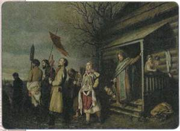
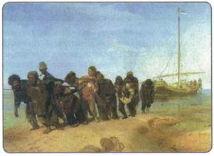
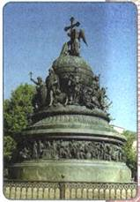
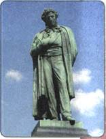
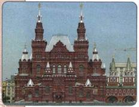
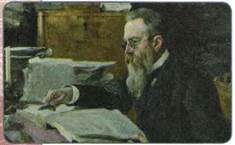
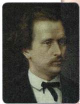
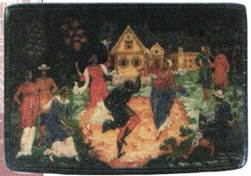
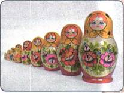
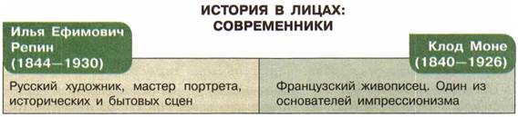

Материал для самостоятельной работы и проектной деятельности учащихся
В чём состояли главные причины расцвета художественной культуры в России во второй половине XIX в.?
1. Особенности развития культуры народов России во второй половине XIX в.
Во второй половине XIX в. развитие художественной культуры народов России проходило под благотворным воздействием Великих реформ. Это проявилось в полной мере в её демократической направленности, сюжетных линиях произведений, образах героев.
Одной из отличительных черт культурного развития этого времени стало взаимовлияние и взаимообогащение культуры русского и других народов России.
Многие сферы культурной жизни народов страны впервые получили своё развитие в эти годы. В различных национальных районах империи возникали театры, библиотеки, музеи, музыкальные общества, основанные на народных традициях и обычаях коренных народов.
Украинские, белорусские, кавказские, татарские мотивы получили своё развитие в творчестве русских композиторов, театральных деятелей, артистов.
2. Живопись
Русская живопись второй половины XIX в. решала те же общественные вопросы, что и литература. Ведущим в ней также стало направление критического реализма.
Одним из крупнейших мастеров этого направления был В. Г. Перов, сумевший показать многие проблемные стороны жизни. В 1861 г. художник написал картину «Сельский крестный ход на Пасху», обличавшую лицемерие и показывающую невежество забитого нуждой народа. Картины Перова — это яркий рассказ о положении представителей различных сословий («Чаепитие в Мытищах», «Приезд гувернантки в купеческий дом», «Последний кабак у заставы»). Особенно сильное впечатление производило полотно «Тройка», изображающее нелёгкую жизнь детей.

Сельский крестный ход на Пасху. Художник В. Г. Перов

Бурлаки на Волге. Художник И. Е. Репин
В 1863 г. в художественной жизни России произошло из ряда вон выходящее событие. 14 выпускников Академии художеств отказались писать обязательные для получения диплома картины на сюжет скандинавской мифологии. Они мотивировали это тем, что в жизни есть более достойные для кисти темы. Не получив разрешения на свободный выбор, они демонстративно покинули академию и основали петербургскую Артель художников, которая в 1870 г. была преобразована в «Товарищество передвижных художественных выставок». Передвижными эти выставки назывались потому, что их устраивали не только в Петербурге и Москве, но и в провинции. Это было своеобразное «хождение в народ» русских художников. Основным критерием для отбора картин на выставки стало требование отражать жизнь со всеми её проблемами.
Среди художников, подписавших первый устав «Товарищества передвижников», были Н. Н. Ге, А. К. Саврасов, И. И. Шишкин, братья В. Е. и К. Е. Маковские, В. Г. Перов. Позднее к ним присоединились В. М. Васнецов, Н. А. Ярошенко, К. А. Савицкий и др. С середины 1880-х гг. участие в выставках принимали В. А. Серов, И. И. Левитан, В. Д. Поленов.
Лидером и теоретиком передвижничества стал И. Н. Крамской. Он вошёл в историю живописи как выдающийся портретист. Крамской запечатлел образы М. Е. Салтыкова-Щедрина, Н. А. Некрасова, Л. Н. Толстого. Многие его произведения сочетают в себе жанры портрета и тематической картины («Неизвестная», «Неутешное горе»).
Вершиной реализма в русской живописи считается творчество передвижников И. Е. Репина и В. И. Сурикова, которые создали собирательный образ русского народа. Наиболее громкое общественное звучание имели работы Репина «Бурлаки на Волге», «Не ждали», «Отказ от исповеди». В 1870— 1880-е гг. художник увлёкся историческими сюжетами («Царевна Софья», «Иван Грозный и сын его Иван 16 ноября 1581 года», «Запорожцы пишут письмо турецкому султану»). Репин обладал несомненным даром портретиста. Он создал образы знаменитых писателей, композиторов, актёров, прославивших русскую культуру.
На полотнах Сурикова воссозданы драматичные эпизоды отечественной истории, главным героем которой является народ. «Утро стрелецкой казни», «Покорение Сибири Ермаком», «Боярыня Морозова» — эти картины вошли в золотой фонд русской художественной культуры.
К жанру народных сказаний обратился художник В. М. Васнецов («Алёнушка», «Витязь на распутье», «Богатыри», «После побоища Игоря Святославича с половцами»).
Объектом внимания многих художников стал среднерусский пейзаж, суровая природа Русского Севера. Картины И. И. Шишкина создают впечатление могущества, силы, величия природы («Рожь», «Рубка леса», «Сосновый бор. Мачтовый лес в Вятской губернии»). А. К. Саврасову ближе пейзаж лирический, пронизанный щемящей любовью к родной земле («Грачи прилетели»).
Особое место среди пейзажистов второй половины XIX в. занимает А. И. Куинджи, который был мастером поразительных световых эффектов («Украинская ночь», «Берёзовая роща», «Лунная ночь на Днепре»). Изумительные по красоте «пейзажи настроения» создавал талантливый художник И. И. Левитан. Большой популярностью пользуются полотна И. К. Айвазовского, который больше всего любил изображать морскую стихию.

Памятник «Тысячелетие России в Санкт-Петербурге. Скульптор М. О. Микешин

Памятник А. С. Пушкину в Москве Скульптор А. М. Опекушин
3. Скульптура и архитектура
Наиболее известным скульптором второй половины XIX в. был М. М. Антокольский. По своим воззрениям он примыкал к передвижникам. Мастер создал серию исторических портретов: «Иван Грозный», «Пётр I», «Ярослав Мудрый», «Ермак».
Выдающимся событием в культурной жизни страны стало открытие в июне 1880 г. памятника А. С. Пушкину в Москве, который был установлен на народные пожертвования. Автором памятника был известный скульптор А. М. Опекушин.
М. О. Микешин в памятнике «Тысячелетие России», открытом в Новгороде в 1862 г., воплотил в бронзе 129 скульптурных фигур. Он стал также автором памятника Екатерине II в Петербурге.
Классицизм в архитектуре отошёл в прошлое. Новые типы зданий промышленных предприятий и государственных учреждений, вокзалов, магазинов, больниц, банков, театров, мостов требовали новых архитектурных решений. Зодчие стали искать их в декоративных формах прошлого, используя мотивы и закономерности готики, Ренессанса, барокко и других стилей. Это привело к господству эклектики — смешения различных художественных стилей. Так, М. Е. Месмахер возводит здание архива Государственного совета в Петербурге в духе эпохи Возрождения. Эти же мотивы использует и А. И. Кракау в проектах зданий Балтийского вокзала и особняка крупного предпринимателя барона А. Л. Штиглица на Английской набережной Невы.

Здание Исторического музея в Москве. Архитекторы А. А. Семёнов, В. О. Шервуд
Широкое распространение получил неорусский (или псевдорусский) стиль. В моду вошли шатровые завершения, башенки, фигурные наличники, по меткому замечанию современника, «мраморные полотенца и кирпичная вышивка». В этом стиле были построены знаменитые московские здания — Исторического музея (А. А. Семёнов и В. О. Шервуд), Городской думы (Д. Н. Чичагов), Верхних торговых рядов (А. Н. Померанцев).
Особая страница в русской архитектуре второй половины XIX в. — доходные многоэтажные и многоквартирные дома, из которых заказчик стремился извлечь максимальную прибыль, затрачивая на их строительство минимальные средства. Сооружение таких домов не требовало и значительных творческих усилий. Они стали прологом к появлению типовой архитектуры XX в.
4. Музыка
Вторая половина XIX в. — время расцвета русского музыкального искусства. Его символом стало творчество «Могучей кучки» — содружества пяти выдающихся русских композиторов: М. А. Балакирева, М. П. Мусоргского, Ц. А. Кюи, А. П. Бородина, Н. А. Римского-Корсакова. Главный источник вдохновения они черпали в народном творчестве, ведя сюжетные линии от героического народного эпоса. Композиторы «Могучей кучки» создали ряд бессмертных произведений, среди которых наиболее значительными являются музыкальные драмы Мусоргского «Борис Годунов» и «Хованщина», опера Римского-Корсакова «Псковитянка», эпическое музыкальное полотно Бородина «Князь Игорь» и др.
Вторая половина XIX в. подарила миру гений П. И. Чайковского, оставившего богатейшее музыкальное наследие. Вершинами его творчества являются оперы «Евгений Онегин» и «Пиковая дама», балеты «Лебединое озеро», «Спящая красавица», «Щелкунчик». Колоссальный вклад внёс Чайковский в развитие симфонической и камерной музыки.
В 1880—1890-х гг. постепенно расцветало творчество нового поколения композиторов — С. И. Танеева, А. К. Глазунова, А. К. Лядова, А. С. Аренского и др. Получили известность и совсем молодые композиторы — С. В. Рахманинов и А. Н. Скрябин.
Беспримерный взлёт композиторского творчества сопровождался подъёмом исполнительского искусства. Мариинский оперный театр в Петербурге прославили такие певцы, как О. А. Петров, Е. А. Лавровская, Д. М. Леонова. На сцене Большого театра пели П. А. Хохлов, Б. Б. Корсов.

Н. А. Римский-Корсаков. Художник В. А. Серов

Н. Г. Рубинштейн
Вторая половина XIX в. явилась значительным этапом в развитии музыкальной культуры народов России. Ученик Римского-Корсакова украинец Н. В. Лысенко создал классические национальные произведения в жанре оперы («Наталка-Полтавка», «Тарас Бульба»), романса, инструментальной музыки. Он был не только выдающимся композитором, но и дирижёром, пианистом, собирателем народной музыки.
Большое общественное значение имела его опера «Тарас Шевченко». В 1868 г. Т. Чухаджян создал первую армянскую оперу «Аршак II». М. А. Баланчивадзе является автором первой грузинской оперы «Тамара Коварная».
Музыка, как и иные области художественной культуры, во второй половине XIX в. выполняла общественные и просветительские задачи. Использование народных песенных мотивов, обращение к эпическим сюжетам предполагали приобщение к музыкальному творчеству широких масс населения. В самом начале 1860-х гг. на этом поприще выступил пианист и блестящий дирижёр Н. Г. Рубинштейн. Благодаря его стараниям в 1860 г. появились Московское отделение Русского музыкального общества и великолепный симфонический оркестр, дававший по субботам концерты в Дворянском собрании. Оркестром дирижировал сам Рубинштейн.
В 1866 г. при Музыкальном обществе была создана консерватория (в Петербурге консерватория была открыта в 1862 г.). Директором консерватории стал Рубинштейн, он вёл в ней также класс фортепианной игры. Возникло нотное издательство.
Общества любителей музыки создаются в Ташкенте и Самарканде. По инициативе их членов была начата работа по аранжировке восточных мелодий для европейских инструментов. Руководитель военного оркестра А. Ф. Эйхгорн собрал коллекцию народных инструментов Средней Азии и Казахстана, которая была показана в Москве, Петербурге и Вене.
В конце XIX в. началось изучение татарской народной музыки. Было подготовлено несколько сборников татарских народных песен. В 1885 г. Л. Агниашвили организовал первый грузинский народный хор. В Грузии и Армении ширилось движение собирателей народных песен.
5. Театр
Особая роль в пореформенной России отводилась театру. Он был единственным публичным местом, где легально могли проявляться не только личные, но и общественные симпатии, где авторы пьес могли почувствовать мгновенную зрительскую реакцию на идеи, заложенные в их произведениях. Театр представлял собой нечто большее, чем развлекательное зрелище. Он стал единственным серьёзным культурным развлечением. Особенно велика была роль драматического искусства в жизни провинции. Театры действовали более чем в 100 городах России.
История русского театра второй половины XIX в. неразрывно связана с именем А. Н. Островского, создавшего около полусотни пьес («Гроза», «Лес», «Бесприданница», «Волки и овцы» и др.). Драматург выступал против пошлости, невежества, отсталости и других пороков, свойственных обществу, взывая к гуманности, просвещению. Содержание пьес Островского совпадало с настроениями разночинной молодёжи, они пользовались огромным успехом.
Первое место в театральном мире занимал Малый театр, где сложилась школа реалистического актёрского мастерства. Драмы и комедии Островского заняли на этой старейшей русской сцене главное место. Не случайно Малый театр стал называться Домом Островского.
В Малом театре сложились знаменитые актёрские династии — Садовских, Самойловых, Васильевых. П. М. Садовский прославился исполнением ролей купцов-самодуров в пьесах Островского.
В 1870-е гг. взошла звезда М. Н. Ермоловой. После первой же роли, сыгранной ею в Малом театре, стало понятно, что на русской сцене появилось исключительное дарование. В 1873 г. молодая актриса получила роль Катерины в драме Островского «Гроза». Так началась в её творческой биографии череда свободолюбивых героинь, протестующих против социального и духовного рабства. Особого накала эти мотивы достигли в роли Лауренсии («Овечий источник» Лопе де Вега). Благодаря игре Ермоловой спектакль получил такое острое социальное звучание, что был запрещён после нескольких представлений.
В 1864 г. во Львове общество «Русская беседа» организовало национальный профессиональный театр с таким же названием. В Киеве в 1865 г. был открыт Оперный театр.
В 1890 г. в Минске был открыт первый постоянный белорусский театр.
6. Художественные промыслы
Рост крупной промышленности повлёк за собой постепенное исчезновение массового ручного производства традиционных предметов народного быта. В то же время вторая половина XIX столетия с её салонами, выставками, ярмарками стала временем возрождения интереса к древним, полузабытым ремёслам. Изделия народных мастеров из предметов повседневного быта превратились в произведения искусства. Это относится к таким видам ремёсел, как вышивка, производство керамики, ковроделие, художественная обработка металла, камня, дерева, кости и т. д. В России складывались или возрождались художественные школы, получившие мировую известность.
В слободе Дымково близ Вятки женщины с давних пор были заняты изготовлением глиняных игрушек, раскрашенных яркими красками. И хотя в конце XIX в. фабричные гипсовые статуэтки стали теснить эти игрушки, дымковские «барыни», «няньки», «водоноски» в ярких юбках с пышными оборками пользовались большой популярностью на ярмарках, перекочёвывая из деревенских изб в городские дома и коллекции тонких ценителей народного искусства.
Народные художники-иконописцы в сёлах Мстёра и Палех, пытаясь выжить в условиях нашествия фабричных икон, перешли на изготовление предметов быта из папье-маше с лаковой миниатюрой. Это позволило им сохранить тончайшие технические навыки и уникальные живописные традиции.

Палехская миниатюра

Русская матрёшка
Сохранила своё художественное своеобразие гжельская посуда с сочным синим рисунком на белом фоне и полные народного юмора фигурки-статуэтки, выполненные вручную в небольших крестьянских мастерских.
Усилиями Нижегородского губернского земства удалось сохранить промысел в Хохломе, где издревле делали расписную деревянную посуду «под золото».
Была организована широкая продажа произведений народных мастеров в городских магазинах; по заказам земства с народными мастерами стали работать специально приглашённые художники.
Конец XIX в. характеризовался возрождением интереса к народной жизни, художественной культуре, фольклору. Никогда ранее народное искусство не оказывало такого влияния на искусство профессиональное. В России того времени повсеместно создавались общества, кружки, объединявшие людей, увлечённых древними традициями. Итогом их деятельности стало не только сохранение старинных промыслов, но и появление новых.
Так, в конце XIX в. в мастерской Московского губернского земства в Сергиевом Посаде появился промысел, изделия которого — деревянные куклы-матрёшки — стали символом народной России. Источником вдохновения для создателей русской матрёшки — художника С. В. Малютина и мастера токарного дела В. П. Звёздочкина — стали традиции богородской деревянной игрушки. Русская матрешка быстро завоевала популярность. В 1900 г. она была показана на Парижской всемирной выставке, и мастерская стала выполнять заказы не только для России, но и для других стран. Мастера ухитрялись делать наборы матрёшек, насчитывающие до 50 фигурок.
На Кавказе, в Средней Азии и в Поволжье развивались традиционные виды декоративно-прикладного искусства: шёлковое ткачество, золотое шитьё, ковроделие, обработка кожи, производство ювелирных изделий, керамических и медных сосудов.

ПОДВЕДЁМ ИТОГИ
Художественная культура народов России второй половины XIX в. стала своеобразной общественной трибуной, предлагая свои пути переустройства жизни. Источником вдохновения мастеров культуры являлись традиции народного творчества. В то же время искусство решало задачу просвещения народа, стремясь приобщить к своим достижениям широкие слои населения.
Вопросы и задания для работы с текстом параграфа
1. Что нового внесли передвижники в русское искусство? В чём состояла принципиальная новизна их идей? 2. Сформулируйте идею, объединявшую творчество крупнейших живописцев второй половины XIX в. 3. Какие принципиально новые явления появились в архитектуре во второй половине XIX в.? Чем они были вызваны? 4. Какие темы стали ведущими в русском музыкальном искусстве во второй половине XIX в.? 5. Какие причины способствовали усилению роли театра в общественной жизни? 6. Как вы думаете, какое значение имело сохранение и развитие традиционных художественных промыслов?
Думаем, сравниваем, размышляем
1. Почему художники второй половины XIX в. нередко обращались к историческим сюжетам? 2. Какими элементами отличался так называемый псевдорусский стиль? Чем сооружения этого стиля схожи с древнерусскими постройками? Чем они отличаются от них? 3. Из курса Новой истории вспомните об основных достижениях западноевропейской художественной культуры второй половины XIX в. Укажите черты, сближающие российскую и западноевропейскую художественную культуру того периода. 4. Соберите информацию и составьте биографический портрет одного из деятелей художественной культуры второй половины XIX в.
5. Изучите историю написания картины В. В. Верещагина «Апофеоз войны».
6. Используя материалы из Интернета, подготовьте презентацию картин одного из художников-передвижников, расположив их в хронологическом порядке по дате создания.